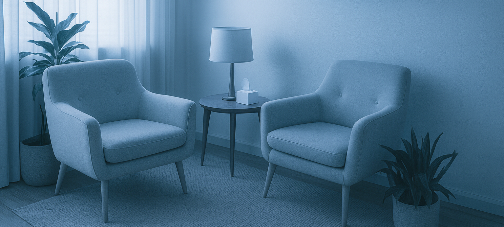

At Sunny Days, we believe that therapy is a collaborative, empowering process. Rachel’s approach integrates cognitive-behavioral, person-centered, and mindfulness-based techniques within a holistic framework. She tailors each session to meet the unique needs of every client—recognizing that each person’s story, pace, and goals are different.
Meet Rachel Day, M.Ed., M.A., LGPC, LSC
Rachel Day is the founder and lead counselor of Sunny Days. She is both a Licensed Graduate Professional Counselor (LGPC) and a Licensed School Counselor (LSC) with extensive experience working with children, adolescents, young adults, and families. Rachel’s dual background in education and clinical counseling gives her a unique understanding of the social, academic, and emotional challenges facing today’s youth.
Rachel’s counseling style is characterized by empathy, warmth, and authenticity. She believes that every person has the inner strength to heal and grow—and that therapy provides the safe, supportive environment where that growth can begin. Her work is guided by the belief that lasting change comes from self-awareness, healthy relationships, and compassion toward oneself.
Currently pursuing her doctorate in psychology, Rachel is deeply committed to ongoing education and to incorporating the latest research and therapeutic approaches into her practice. Her goal is to offer clients the highest quality care, grounded in both science and empathy.
Therapeutic Philosophy
At Sunny Days, we believe that therapy is a collaborative, empowering process. Rachel’s approach integrates cognitive-behavioral, person-centered, and mindfulness-based techniques within a holistic framework. She tailors each session to meet the unique needs of every client—recognizing that each person’s story, pace, and goals are different.
Education and Credentials
M.Ed. in School Counseling
M.A. in Counseling
Licensed Graduate Professional Counselor (LGPC)
Licensed School Counselor (LSC)
Doctoral Candidate in Psychology
Training in cognitive-behavioral therapy (CBT), mindfulness, trauma-informed care, and family systems
Rachel emphasizes:
Empathy and Trust: Creating a safe, judgment-free environment where clients feel comfortable being their authentic selves.
Collaboration and Growth: Working together to identify goals, build insight, and develop practical strategies for everyday life.
Holistic Wellness: Supporting emotional, academic, social, and physical well-being as interconnected parts of a balanced life.
Resilience and Strength: Helping clients recognize their inner resources and build confidence in their ability to face challenges.
Rachel’s holistic, evidence-based approach helps clients move from feeling overwhelmed or stuck to feeling more grounded, capable, and hopeful about their future.
v